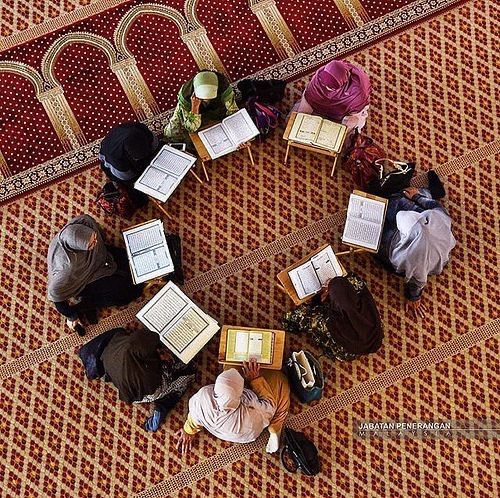
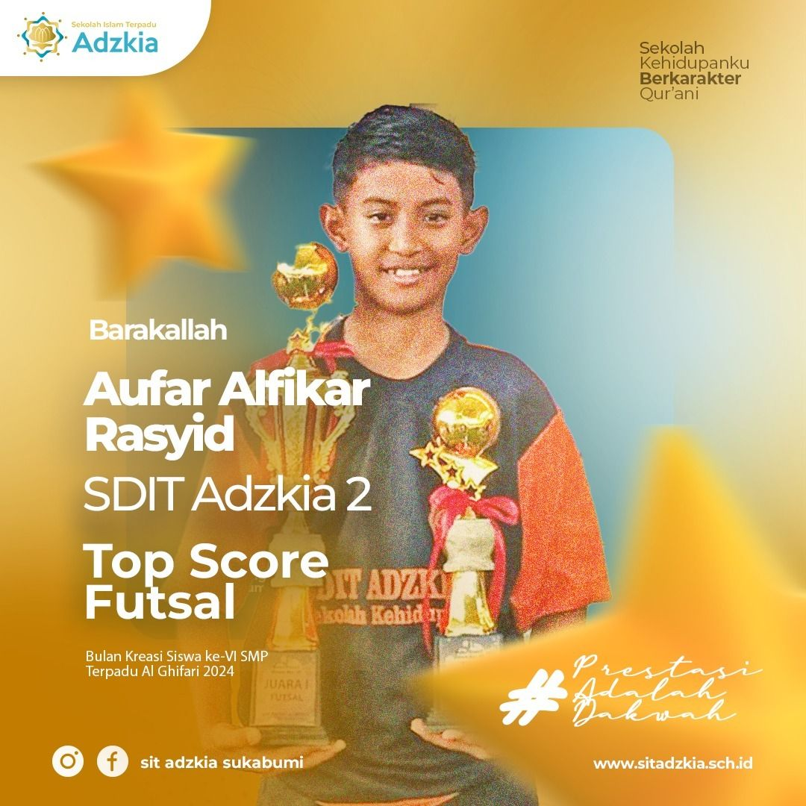
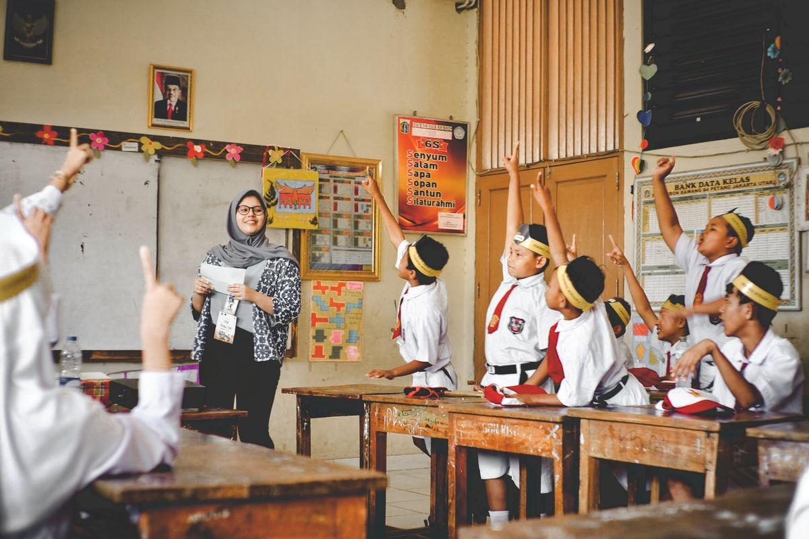
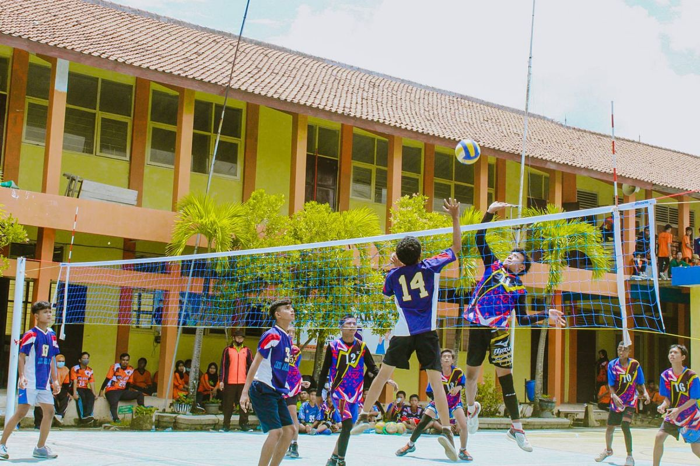
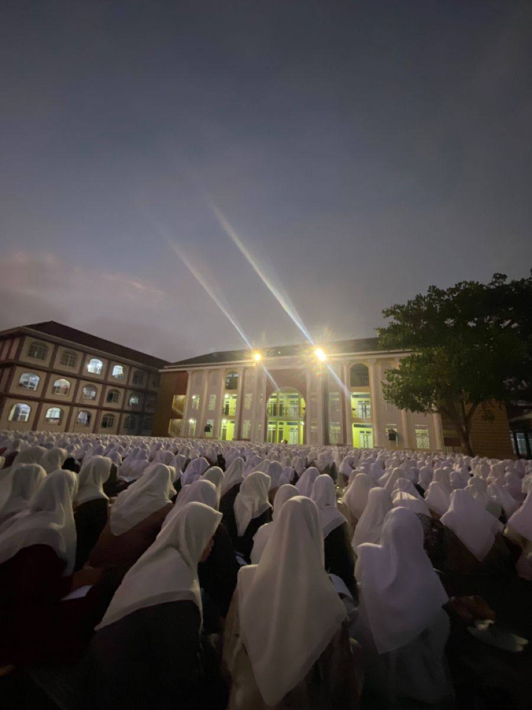
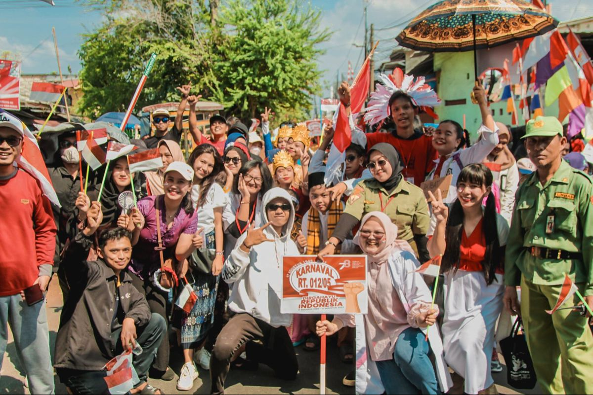
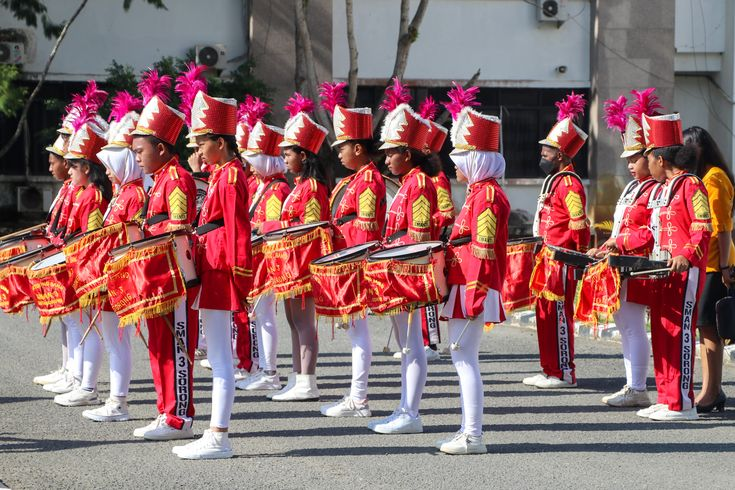

KEAGAMAANKegiatan Keagamaan Madrasah
Madrasah Aliyah Al Anbawi melaksanakan kegiatan keagamaan bersama seluruh siswa.
Baca Selengkapnya →Membangun generasi berilmu, berakhlak mulia, berprestasi dan berlandaskan nilai-nilai Islam.

Selamat datang di website resmi Madrasah Aliyah Al Anbawi. Website ini hadir sebagai media informasi dan komunikasi antara madrasah, peserta didik, orang tua, alumni, dan masyarakat.
Kami berkomitmen memberikan pendidikan yang mengintegrasikan ilmu pengetahuan, teknologi, serta nilai-nilai keislaman untuk membentuk generasi masa depan yang unggul.
Menjadi madrasah yang unggul dalam ilmu pengetahuan, teknologi, prestasi, dan akhlakul karimah.
Menyelenggarakan pendidikan berkualitas yang memadukan ilmu umum dan ilmu agama serta membentuk karakter peserta didik yang Islami.
Menghasilkan lulusan yang beriman, berilmu, berakhlak, mandiri, kreatif, dan mampu bersaing.
Informasi dan kegiatan terbaru madrasah

KEAGAMAANMadrasah Aliyah Al Anbawi melaksanakan kegiatan keagamaan bersama seluruh siswa.
Baca Selengkapnya → AKADEMIK
AKADEMIK
Siswa menggikuti berbagai kegiatan Persiapan akademik untuk Menghadapi ujian.
Baca Selengkapnya →
PRESTASISiswa madrasah aliyah AL ANBAWI berhasil meraih prestasi dalam perlombaan.
Baca Selengkapnya →Dokumentasi kegiatan Madrasah Aliyah Al Anbawi




Tenaga pendidik Madrasah Aliyah Al Anbawi


Mengembangkan bakat, minat, kreativitas dan karakter siswa

Membentuk kemandirian dan tanggung jawab siswa.
Lihat Selengkapnya →Mari menjadi bagian dari keluarga besar Madrasah Aliyah Al Anbawi dan raih masa depan yang gemilang bersama kami.
Jl.cempedak Blok C 29.Desa Mekar sari,kec. palangga,kab. konawe selatan, sulawesi tenggara
0852-3443-4473